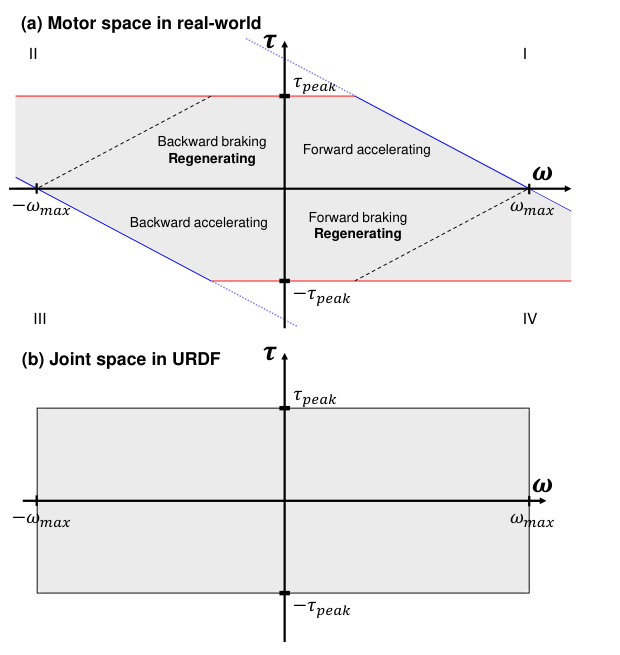
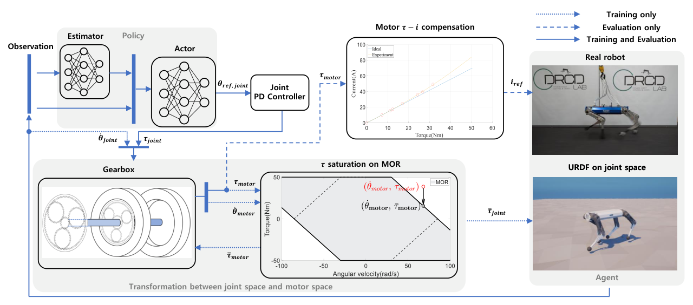
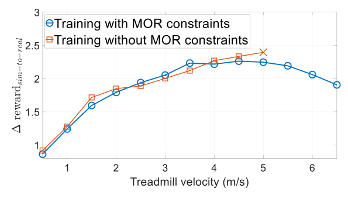
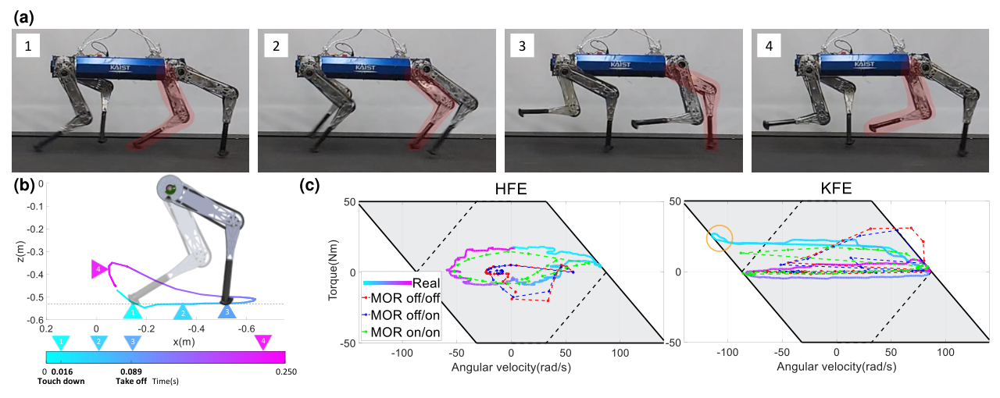
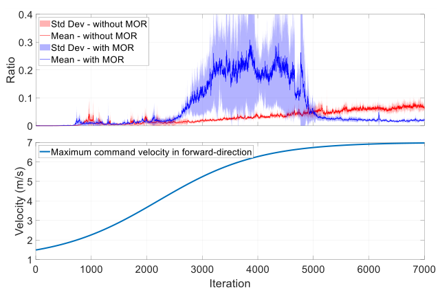

Background & Motivation
高速奔跑時馬達會被用到能力的邊緣,但模擬器(URDF)只給每個關節一個矩形的扭矩/速度上限,真正的馬達卻是「轉得越快、能出的扭矩越少」的斜邊六邊形。本文把這個 Motor Operating Region(MOR)寫成幾條線性不等式,在 RL 訓練時把超出區域的扭矩指令裁切到邊界,再加上讓四腿均分扭矩的步態獎勵與輕量化足端。結果:45 kg 的 KAIST Hound 在跑步機上跑到 6.5 m/s(拿掉 MOR 只有 4.5 m/s),作者稱為電動馬達四足機器人的最快紀錄。
High-speed running drives the motors to the edge of their capability, yet the simulator (URDF) gives each joint only a rectangular torque/velocity limit, while a real motor lives in a slanted hexagon where "the faster it spins, the less torque it can make." This paper writes that Motor Operating Region (MOR) as a few linear inequalities and, during RL training, clips torque commands that leave the region back onto its boundary — plus a gait reward that spreads torque across all four legs and a lighter foot. Result: the 45 kg KAIST Hound runs 6.5 m/s on a treadmill (only 4.5 m/s without the MOR), which the authors call the fastest electric-motor quadruped.
如果只有 30 秒In 30 seconds
- 問題 — 模擬中的關節限制是與速度無關的常數框,允許「高速 + 大扭矩」這種真實馬達做不到的狀態轉移;策略在模擬裡學會依賴它,上實機在高速時就崩(本文的無 MOR 版本在 5 m/s 跌倒)。
- Problem — Simulated joint limits are a speed-independent constant box, permitting "high speed + high torque" transitions a real motor cannot produce; the policy learns to rely on them and collapses at speed on hardware (the no-MOR variant here falls at 5 m/s).
- 方法 — 由準靜態 DC 馬達方程導出\(|\tfrac{R}{K_t}\tau+\tfrac{1}{K_v}\omega|\le V_{\text{bus}}\)、\(|\tau|\le\tau_{\text{peak}}\);把 PD 產生的關節扭矩經齒輪矩陣轉到馬達空間、依當下轉速裁切、再轉回關節空間施加;實機端補償鐵芯飽和造成的非線性 \(\tau\)–\(i\) 關係。
- Method — From quasi-static DC-motor equations derive \(|\tfrac{R}{K_t}\tau+\tfrac{1}{K_v}\omega|\le V_{\text{bus}}\) and \(|\tau|\le\tau_{\text{peak}}\); map the PD-generated joint torque through the gearbox matrix into motor space, clip it at the current speed, map back and apply; on hardware, compensate the nonlinear \(\tau\)–\(i\) curve caused by core saturation.
- 結果 — 實機消融:完整方法 6.5 m/s;去掉步態獎勵 6.0、換回原足端 5.5、去掉 MOR 4.5。訓練中違反 MOR 的指令比例最終較低;6.5 m/s 時實測 \(\tau\)–\(\omega\) 軌跡貼著模擬、並沿著第二象限的再生邊界走。
- Results — Hardware ablation: full method 6.5 m/s; without gait reward 6.0, original foot 5.5, without MOR 4.5. The share of MOR-violating commands ends lower during training; at 6.5 m/s measured \(\tau\)–\(\omega\) traces match simulation and ride the regenerative boundary in quadrant II.
領域脈絡Field context
RL 四足控制的主流是「在模擬裡大量試錯,再 zero-shot 上實機」。縮小 sim-to-real gap 的常見手段有:domain randomization(地形、質量、扭矩常數加雜訊,如 RMA、Rapid Locomotion)與 Hwangbo et al. 2019 的 actuator network(用神經網路學 SEA 的指令→實際扭矩映射)。但這些多半針對「穩健行走」,馬達並沒被逼到極限。
Mainstream RL quadruped control is "trial-and-error at scale in simulation, then zero-shot to hardware." Common sim-to-real fixes include domain randomization (terrain, mass, noisy torque constants, as in RMA and Rapid Locomotion) and Hwangbo et al. 2019's actuator network (a neural net that learns an SEA's command-to-torque map). But these mostly target robust walking, where motors are not pushed to their limits.
高速奔跑不同:馬達輸出貼著能力邊界運作。模型式控制早就意識到這點——MIT humanoid 的 MPC 每步計算由實測 \(\tau\)–\(\omega\) 曲線得到的致動器約束,但只考慮第一象限,忽略了對動態動作很重要的減速/再生區。RL 側先前最快的四足約 5 m/s(Jin et al. 2022),整體電動四足紀錄是 MIT Cheetah 2 的 6.4 m/s。
High-speed running is different: motor output operates right at the capability boundary. Model-based control already knew this — the MIT humanoid MPC computes actuator constraints from measured \(\tau\)–\(\omega\) curves at every step, but only for the first quadrant, ignoring the deceleration / regeneration regions that matter for dynamic motion. On the RL side the fastest prior quadruped was about 5 m/s (Jin et al. 2022); the overall electric-quadruped record was MIT Cheetah 2 at 6.4 m/s.
這是一篇「硬體 + 物理先驗 + RL」的工程論文:機器人 KAIST Hound 本身就是同一團隊(第一作者相同)為高速奔跑以 MINLP 最佳化齒輪比設計的。本文的貢獻不是新的 RL 演算法,而是把馬達規格書上的那張 \(\tau\)–\(\omega\) 圖正確地搬進模擬器——便宜、可解釋,卻剛好修掉高速時最致命的 sim-to-real 落差。
This is a "hardware + physics prior + RL" engineering paper: KAIST Hound itself was designed by the same group (same first author) for high-speed running, with MINLP-optimized gear ratios. The contribution is not a new RL algorithm but moving the spec-sheet \(\tau\)–\(\omega\) diagram faithfully into the simulator — cheap and interpretable, yet it fixes exactly the sim-to-real mismatch that is most lethal at speed.
入門補充:為什麼馬達轉越快、能給的扭矩越少?Primer: why does a motor's available torque shrink with speed? [導讀補充][guide note]
把 DC(或以 FOC 驅動、可近似成 DC 的 BLDC)馬達看成一個電路:驅動器施加電壓 \(V\),一部分消耗在繞組電阻 \(R\) 上,一部分消耗在電感 \(L\) 上,剩下被反電動勢(back-EMF)抵消——轉子轉得越快,反電動勢越大:
Treat a DC motor (or a FOC-driven BLDC, which can be approximated as DC) as a circuit: the drive applies voltage \(V\); part drops across the winding resistance \(R\), part across the inductance \(L\), and the rest is cancelled by the back-EMF — which grows with rotor speed:
忽略電感項(準靜態,正是本文 Eq.(1) 的假設),並把 \(i=\tau/K_t\) 代入,在驅動器最多只能給到匯流排電壓 \(V_{\text{bus}}\) 的前提下:
Dropping the inductive term (quasi-static — exactly the paper's Eq. (1) assumption), substituting \(i=\tau/K_t\), and noting the drive can supply at most the bus voltage \(V_{\text{bus}}\):
直覺:轉速越高,反電動勢吃掉越多電壓,留給「推電流」的電壓餘裕越少,電流(=扭矩)就越小;到無載轉速 \(\omega_0\) 時反電動勢等於 \(V_{\text{bus}}\),扭矩歸零。再疊上由鐵芯磁飽和 / 繞組發熱決定的峰值扭矩 \(\tau_{\text{peak}}\),可用扭矩就是:
Intuition: the faster it spins, the more voltage the back-EMF eats, the less headroom is left to push current, so current (= torque) shrinks; at the no-load speed \(\omega_0\) the back-EMF equals \(V_{\text{bus}}\) and torque hits zero. Layer on the peak torque \(\tau_{\text{peak}}\) set by core saturation / winding heating, and the available torque is:
低於「轉角速度」\(\omega_c\) 時受 \(\tau_{\text{peak}}\) 限制(水平紅線),高於 \(\omega_c\) 後沿斜線(藍線)線性下降——這就是 Fig.3(a) 第一象限的梯形。本文的 \(1/K_v\) 就是這裡的 \(K_e\)(理想 SI 單位下 \(K_e=K_t\))。
Below the corner speed \(\omega_c\) the cap is \(\tau_{\text{peak}}\) (horizontal red line); above it torque falls linearly along the slanted (blue) line — the first-quadrant trapezoid in Fig. 3(a). The paper's \(1/K_v\) is this \(K_e\) (in ideal SI units \(K_e=K_t\)).
為何第二、四象限比較寬?當 \(\tau\omega\lt 0\)(馬達在煞車 / 再生),反電動勢本身就在推煞車方向的電流,驅動器只需很小的電壓、甚至把能量回灌電池。代入 Eq.(2) 可見:前進煞車時,完整的 \(-\tau_{\text{peak}}\) 一直可用到 \(\omega=K_v(V_{\text{bus}}+R\tau_{\text{peak}}/K_t)\),遠超過 \(\omega_c\);甚至超過 \(\omega_0\) 也還能存在,只要煞得夠用力。所以「減速能力」比「加速能力」大,高速著地的瞬間正好用得到。
Why are quadrants II and IV wider? When \(\tau\omega\lt 0\) (the motor is braking / regenerating), the back-EMF itself pushes current in the braking direction; the drive needs little voltage and may even return energy to the battery. Plugging into Eq. (2): while braking forward, the full \(-\tau_{\text{peak}}\) stays available up to \(\omega=K_v(V_{\text{bus}}+R\tau_{\text{peak}}/K_t)\), far beyond \(\omega_c\); you can even exceed \(\omega_0\), as long as you brake hard enough. So deceleration capability exceeds acceleration capability — exactly what touchdown at speed needs.
齒輪比:減速比 \(G\) 下 \(\tau_j=G\tau_m\)、\(\omega_j=\omega_m/G\),關節空間的斜線斜率被放大 \(G^2\) 倍——\(G\) 大則關節扭矩大但極速低。這正是 Hound 設計論文用 MINLP 最佳化齒輪比要權衡的東西;本文則是把這個權衡的「後果」帶進 RL。
Gear ratio: with reduction \(G\), \(\tau_j=G\tau_m\) and \(\omega_j=\omega_m/G\), so the joint-space slope scales by \(G^2\) — large \(G\) means big joint torque but low top speed. This is precisely the trade-off the Hound design paper optimizes with MINLP; this paper carries the consequences of that trade-off into RL.

核心洞見 · KEY INSIGHTSKEY INSIGHTS
值得帶走的不是「6.5 m/s」這個數字,而是以下幾個觀念:
What is worth taking away is not the number "6.5 m/s" but these ideas:
- 矩形關節限制是高速 sim-to-real 的隱形殺手。 低速時策略用的扭矩都在 MOR 內,看不出差異;約 3.5–4 m/s 以上才開始違反 MOR,落差隨速度放大。
- Rectangular joint limits are a hidden killer of high-speed sim-to-real. At low speed every torque the policy uses lies inside the MOR, so nothing looks wrong; violations start above roughly 3.5–4 m/s and the gap grows with speed.
- 致動器物理可以「零學習」地放進模擬。 不需要像 actuator network 那樣蒐集資料訓練網路——規格書上的 \(R,K_t,K_v,V_{\text{bus}},\tau_{\text{peak}}\) 就能定義幾條線性不等式。
- Actuator physics can go into the simulator with zero learning. No data-collection-and-train loop as with an actuator network — spec-sheet \(R,K_t,K_v,V_{\text{bus}},\tau_{\text{peak}}\) define a handful of linear inequalities.
- 約束要在「馬達空間」而不是「關節空間」施加。 對 Hound 這種髖/膝共軸、行星齒輪耦合的設計,關節速度不等於馬達速度除以減速比;必須用齒輪矩陣換算,否則裁切位置是錯的。
- Enforce the constraint in motor space, not joint space. For Hound's coaxial, planetary-coupled hip/knee, joint speed is not simply motor speed over the ratio; you must go through the gearbox matrix or you clip in the wrong place.
- 「裁切」本身不會教策略避開不可行區——是裁切 + 平滑懲罰一起。 被裁切後實際扭矩相同、扭矩懲罰也相同;真正讓策略收手的是 action smoothness 懲罰對「突然跳出去」的指令罰得更重。[導讀補充] 這是本文 Discussion 的論點,但值得強調:它不是 CMDP 意義下的約束 RL。
- Clipping alone does not teach the policy to avoid infeasible commands — clipping plus a smoothness penalty does. After clipping the applied torque and the torque penalty are identical; what makes the policy back off is the action-smoothness term punishing commands that jump outside. [guide note] This is the paper's own Discussion argument, but worth stressing: it is not constrained RL in the CMDP sense.
- 高速瓶頸常是「單顆馬達」先飽和。 沿用既有獎勵時出力偏向一側;加一個對角步態獎勵讓四腿均分扭矩,就從 6.0 推到 6.5 m/s。
- The high-speed bottleneck is often one motor saturating first. With the inherited reward, power skewed to one side; a diagonal-pair gait reward that spreads torque across legs takes the robot from 6.0 to 6.5 m/s.
Problem Diagnosis
現況 vs 痛點Status quo vs pain points
| 現有做法Existing approach | 它的痛點Its pain point |
|---|---|
| URDF 關節限制URDF joint limits 常數上下界constant bounds | 扭矩與速度各自一個常數上下界 → 矩形可行區;高速時允許真實馬達給不出的扭矩,再生區又過度保守。Independent constant bounds on torque and speed → a rectangular feasible set; permits torque a real motor cannot give at high speed, and is over-conservative in regeneration. |
| Domain randomization (RMA, Rapid Locomotion) | 對扭矩常數、質量加雜訊能涵蓋參數不確定,但無法表達「扭矩上限隨轉速變」這種結構性限制。Noise on torque constants and mass covers parameter uncertainty, but cannot express a structural limit like "the torque cap depends on speed." |
| Actuator network (Hwangbo et al. 2019) | 要在實機蒐集資料再訓練網路;作者指出非線性與廠商資訊不足使 SEA 難建模。Needs hardware data collection and network training; the authors note nonlinearity and missing manufacturer information make SEAs hard to model. |
| MPC + 實測 \(\tau\)–\(\omega\) 曲線MPC + measured \(\tau\)–\(\omega\) curves (MIT humanoid) | 每步精確計算致動器約束,但只用第一象限,忽略減速 / 再生區。Computes actuator constraints precisely at each step, but only in the first quadrant, ignoring deceleration / regeneration. |
| 線性 \(\tau=K_t i\)Linear \(\tau=K_t i\) | 鐵芯馬達在大電流時磁通飽和,同樣電流給的扭矩比線性預期少(Fig.2 中 \(\tau_{\text{peak}}\) 定義在偏離線性 20% 處)。Iron-core motors saturate at high current, so the same current yields less torque than linear predicts (\(\tau_{\text{peak}}\) in Fig. 2 is defined at 20% deviation from linearity). |
| 沿用的獎勵(Ji et al. 2022)Inherited reward (Ji et al. 2022) | 高速時出力偏向一側,整機極速被「第一顆飽和的馬達」綁住。At speed, motor power skews to one side; top speed is capped by the first motor to saturate. |
核心問題:「當馬達被推到極限時,怎樣讓模擬中的狀態轉移不超出真實馬達的能力?」
The core question: "When motors are pushed to the limit, how do we keep simulated state transitions within what a real motor can actually do?"
Gap 表 — 誰缺什麼,本文怎麼補Gap table — who lacks what, and how this paper fills it
| 方法Method | 限制Limitation | 本文如何補上How this paper fills it |
|---|---|---|
| URDF 矩形限制URDF rectangle | 與速度無關。Speed-independent. | MOR 六邊形:\(|\tau|\le\tau_{\text{peak}}\) 加上兩條電壓斜線。MOR hexagon: \(|\tau|\le\tau_{\text{peak}}\) plus two voltage lines. |
| Actuator network | 需資料、需訓練、黑盒。Data-hungry, trained, black box. | 只需規格書參數,解析式、可解釋。Only spec-sheet parameters; analytic and interpretable. |
| 第一象限 MPC 約束First-quadrant MPC constraint | 沒有煞車 / 再生區。No braking / regeneration. | 四個象限都建模,再生區較寬。Models all four quadrants, with wider regenerative ones. |
| 關節空間限制Joint-space limits | 耦合齒輪下關節≠馬達。With coupled gearing, joint ≠ motor. | 用疊加原理推齒輪矩陣,在馬達空間裁切。Derive a gearbox matrix by superposition; clip in motor space. |
| 線性 \(\tau\)–\(i\)Linear \(\tau\)–\(i\) | 大扭矩時實機出力不足。Under-delivers at high torque. | 實測單軸資料,二次近似補償電流。Single-axis measurements; quadratic current compensation. |
| 既有獎勵Inherited reward | 單顆馬達先飽和。One motor saturates first. | 對角步態獎勵 + 輕量化足端。Diagonal gait reward + lightweight foot. |
注意這裡的痛點只在高速才顯現:Fig.7 顯示 3.5 m/s 以下,有沒有 MOR 的評估結果完全一樣。所以這不是「所有 RL 四足都該改」的通用 bug,而是「一旦你想逼近硬體極限,矩形限制就會說謊」。這也解釋了為什麼先前以穩健行走為目標的工作很少在意它。
Note the pain only shows at high speed: Fig. 7 shows that below 3.5 m/s, evaluation with or without the MOR is identical. So this is not a universal bug every RL quadruped must fix, but "once you approach the hardware limit, the rectangle lies." That also explains why prior work aimed at robust walking rarely cared.
Core Method
管線:動作 → 扭矩 → 馬達空間裁切 → 施加Pipeline: action → torque → motor-space clipping → apply

關鍵 1:把 MOR 寫成線性不等式Key idea 1: the MOR as linear inequalities
作者假設電流變化率可忽略(和用 dynamometer 量靜態點畫 \(\tau\)–\(\omega\) 曲線的條件相同),得到準靜態馬達方程(Eq.1):
The authors assume the rate of current change is negligible (the same condition as plotting a \(\tau\)–\(\omega\) curve from static dynamometer points), giving the quasi-static motor equation (Eq. 1):
施加電壓不可能超過匯流排電壓(Eq.2),再疊上峰值扭矩,得到MOR = 四條線性不等式圍成的六邊形:
The applied voltage cannot exceed the bus voltage (Eq. 2); adding the peak torque gives the MOR = a hexagon bounded by linear inequalities:
論文說超出 MOR 的扭矩被「依 Eq.(1) 裁切」、Fig.5 畫的是固定轉速下沿扭矩軸投影。寫成顯式公式即 [導讀補充:由 Eq.2 與 Fig.5 箭頭整理,論文未寫出此式]:
The paper says violating torques are clipped "according to Eq. (1)," and Fig. 5 draws a projection along the torque axis at fixed speed. Written explicitly [guide note: assembled from Eq. 2 and the Fig. 5 arrow; the paper does not write this formula]:
關於 \(\tau_{\text{peak}}\):作者強調它不是絕對值,而是避免繞組過熱燒毀的建議值,定義為扭矩偏離線性 20% 之處(引 TQ RoboDrive 的定義)。從 Fig.5 與 Fig.11 的插圖讀到,膝馬達(馬達側)的 \(\tau_{\text{peak}}\) 約 50 Nm、無載轉速約 85 rad/s [導讀補充:由圖讀值]。
On \(\tau_{\text{peak}}\): the authors stress it is not an absolute limit but a recommended value to keep the windings from burning out, defined where torque deviates 20% from linearity (citing TQ RoboDrive's definition). Reading the Fig. 5 / Fig. 11 insets, the knee motor (motor side) has \(\tau_{\text{peak}}\approx 50\) Nm and a no-load speed of about 85 rad/s [guide note: read off the plots].
關鍵 2:耦合齒輪下的關節 ↔ 馬達空間Key idea 2: joint ↔ motor space under coupled gearing
Hound 的髖(HFE)與膝(KFE)模組是一體的共軸設計:HFE 用中空軸,HFE 的輸出接在 KFE 行星齒輪的環齒輪上。所以 HFE 一轉,KFE 齒輪箱原本「固定」的環齒輪也跟著轉。URDF 的串聯關節約定描述不了這種並聯結構,作者用疊加原理推出(Eq.3–4):
Hound's hip (HFE) and knee (KFE) modules form one coaxial unit: HFE uses a hollow shaft and its output is bonded to the ring gear of the KFE planetary stage. So when HFE turns, the KFE gearbox's nominally stationary ring turns too. URDF's serial-joint convention cannot describe this parallel arrangement; the authors use superposition to derive (Eq. 3–4):
[導讀補充] 由虛功原理,若 \(\omega_j=A\,\omega_m\),扭矩應滿足 \(\tau_m=A^{\top}\tau_j\)(等價於 \(\tau_j=A^{-\top}\tau_m\))。用單級減速驗算:\(A=1/G\) 時應得 \(\tau_m=\tau_j/G\),但照印出的 Eq.(4) 會得到 \(\tau_m=G\,\tau_j\)。因此 Eq.(4) 很可能是左右兩邊寫反的筆誤——實作若照抄要小心。
[guide note] By virtual work, if \(\omega_j=A\,\omega_m\) then torques satisfy \(\tau_m=A^{\top}\tau_j\) (equivalently \(\tau_j=A^{-\top}\tau_m\)). Sanity check with a single reduction: \(A=1/G\) should give \(\tau_m=\tau_j/G\), but Eq. (4) as printed gives \(\tau_m=G\,\tau_j\). So Eq. (4) is most likely a typo with the sides swapped — be careful if implementing it verbatim.
關鍵 3:非線性 \(\tau\)–\(i\) 補償(只在實機)Key idea 3: nonlinear \(\tau\)–\(i\) compensation (hardware only)
模擬裡低階指令是扭矩,實機上是電流。鐵芯馬達磁通飽和讓 \(\tau\)–\(i\) 在大扭矩時明顯偏離線性,於是作者在單軸馬達上量 \((i,\tau)\) 資料點,用二次近似求出「要得到某扭矩該給多少電流」:
The low-level command is torque in simulation but current on hardware. Core saturation makes \(\tau\)–\(i\) deviate from linear at high torque, so the authors measure \((i,\tau)\) points on a single-axis motor and fit a quadratic approximation for "how much current yields a given torque":
[導讀補充] 上式只是示意形式,係數未公開。Fig.5 插圖的實驗點只到約 32 Nm / 49 A,而曲線外插到 50 Nm / 約 84 A(理想線性約 70 A)——也就是說,最需要補償的飽和區正好是外插。
[guide note] The formula is schematic; coefficients are not published. The experimental points in the Fig. 5 inset only reach about 32 Nm / 49 A, while the curve is extrapolated to 50 Nm / about 84 A (ideal linear: about 70 A) — i.e., the saturated region that most needs compensation is extrapolated.
關鍵 4:獎勵——對角步態 + 著地速度Key idea 4: rewards — diagonal gait + contact velocity
整體獎勵沿用 Ji et al. 2022 的 concurrent training 框架,新增兩項(粗體)。腳的編號 1–4 = RR、RL、FR、FL,\(C_{f,i}\in\{0,1\}\) 為接觸狀態。步態獎勵只在「RR+FL 著地、另兩腳騰空」或反之時給分——即對角腳成對 [導讀補充:這就是 trot,論文只說「對稱步態」]:
The overall reward follows Ji et al. 2022's concurrent-training framework, adding two terms (bold). Feet 1–4 = RR, RL, FR, FL; \(C_{f,i}\in\{0,1\}\) is the contact state. The gait reward pays only when "RR+FL are down and the other two are airborne," or vice versa — diagonal pairs [guide note: i.e. a trot; the paper only says "symmetrical gait"]:
\(k_{\text{contact}}\) 只在著地前一步為 1。著地速度獎勵用來壓低腳觸地前的相對速度——因為 RaiSim 是硬接觸模型,模擬裡沒有真實地面與腳之間的恢復係數(反彈),實機高速著地容易不穩。
\(k_{\text{contact}}\) is 1 only in the step just before touchdown. The contact-velocity term reduces foot-ground relative velocity before impact, because RaiSim uses a hard contact model without the real restitution (bounce) between foot and ground, making high-speed touchdown unstable on hardware.
| 獎勵項Term | 形式Expression | 係數Coef. |
|---|---|---|
| 線速度追蹤Linear velocity | \(C_V\exp(-\|V^{\text{des}}_{xy}-V_{xy}\|^2)\) | 6.0 |
| 角速度追蹤Angular velocity | \(C_{\dot\theta}\exp(-1.5(\dot\theta^{\text{des}}_z-\dot\theta_z)^2)\) | 3.0 |
| 著地速度Contact velocity | \(C_{\text{contact}}k_{\text{contact}}\|V_{f,z,i}\|^2\) | −6.0 |
| 步態Gait | 見上式see above | 1.2 |
| 腳滑Foot slip | \(C_{\text{slip}}C_{f,i}\|V_{f,xy,i}\|^2\) | −0.16 |
| 抬腳高度Foot clearance | \(C_{\text{clr}}(\neg C_{f,i})({}^{w}p_{f,z,i}-{}^{w}p^{\text{des}}_{f,z})^2\|V_{f,xy,i}\|^{0.5}\) | 表中未列not listed |
| 姿態Orientation | \(C_{\text{ori}}\,\text{angle}(\phi_{\text{body},z},\phi_{\text{world},z})^2\) | −3.0 |
| 關節扭矩Joint torque | \(C_\tau\|\tau\|^2\) | \(-2\times10^{-4}\) |
| 關節位置 / 速度 / 加速度Joint pos. / speed / accel. | \(C_q\|q_t-q_{\text{nom}}\|^2,\ C_{\dot q}\|\dot q_t\|^2,\ C_{\ddot q}\|\dot q_t-\dot q_{t-1}\|^2\) | \(-0.75,\ -3\times10^{-4},\ -6.7\times10^{-3}\) |
| 動作平滑 1 / 2Action smoothness 1 / 2 | \(C_{s1}\|q^{\text{des}}_t-q^{\text{des}}_{t-1}\|^2,\ C_{s2}\|q^{\text{des}}_t-2q^{\text{des}}_{t-1}+q^{\text{des}}_{t-2}\|^2\) | \(-2.5,\ -0.8\) |
| 機身晃動Base motion | \(C_{\text{base}}(0.8V_z^2+0.2|\dot\theta_x|+0.2|\dot\theta_y|)\) | −4 |
訓練配方與「高速專用」技巧Training recipe and speed-specific tricks
- 網路:policy / value [256,128,64],estimator [256,128];RaiSim;400 個平行環境、每回合 4 秒、控制 100 Hz → 每次迭代 160,000 筆樣本;Threadripper PRO 5995WX + RTX 3080 Ti 約 6 小時。
- Networks: policy / value [256,128,64], estimator [256,128]; RaiSim; 400 parallel envs, 4-s episodes, 100 Hz control → 160,000 samples per iteration; Threadripper PRO 5995WX + RTX 3080 Ti, about 6 hours.
- 速度課程:前進指令從 \(U(-0.3,1.5)\) m/s 逐步放寬到 \(U(-1.4,7.0)\) m/s(Fig.12 下圖)。
- Velocity curriculum: forward command widened from \(U(-0.3,1.5)\) to \(U(-1.4,7.0)\) m/s (Fig. 12 bottom).
- 初始狀態:25% 機率從上一回合的末狀態接續(學急加減速),且新舊指令差不超過 2 m/s;75% 從靜止開始、指令在第一秒內漸增——否則指令與現速差太大時,機器人會選擇直接站著不動以免回合終止。
- Initial states: with 25% probability start from the previous episode's final state (to learn abrupt speed changes), with the command change capped at 2 m/s; 75% start from standstill with the command ramped over the first second — otherwise, with a large command-speed gap, the robot learns to stand still to avoid termination.
- 獎勵權重排程:速度越快,扭矩 / 關節速度懲罰越大,機器人傾向放棄追蹤;因此逐步調高線速度與角速度追蹤權重。
- Reward-weight schedule: faster running incurs larger torque / joint-speed penalties and the robot tends to give up tracking, so the linear and angular velocity weights are gradually increased.
- Domain randomization:機身質量、慣量、質心位置(難以鑑別的量)。
- Domain randomization: body mass, inertia, and CoM position (quantities hard to identify).
- 輕量化足端:分析模擬中奔跑的觸地/離地角,只保留必要的一段球面 → 小腿質量降為原本的 38.0%(313 g → 119 g)、俯仰慣量降為 37.4%。
- Lightweight foot: from simulated attack / detach angles, keep only the needed patch of a sphere → calf mass down to 38.0% of the original (313 g → 119 g), pitch inertia to 37.4%.
符號白話對照Symbols in plain words
| \(\tau,\ \omega\) | 馬達側(減速器之前)的扭矩與角速度;下標 \(m\) 為馬達空間、\(j\) 為關節空間。Motor-side (before the reducer) torque and angular velocity; subscript \(m\) = motor space, \(j\) = joint space. |
| \(V_{\text{bus}}\) | 匯流排電壓;實機電池 20S2P 21700,充到 81 V(上限 84 V,留裕度給再生回灌電流)。Bus voltage; the motor battery is a 20S2P 21700 pack charged to 81 V (max 84 V, leaving margin for regenerative current). |
| \(R,\ L\) | 繞組電阻、電感(\(L\) 項在準靜態假設下被丟掉)。Winding resistance and inductance (the \(L\) term is dropped under the quasi-static assumption). |
| \(K_t,\ K_v\) | 扭矩常數(N·m/A)、角速度常數(反電動勢 \(=\omega/K_v\))。Torque constant (N·m/A) and angular-velocity constant (back-EMF \(=\omega/K_v\)). |
| \(\tau_{\text{peak}}\) | 峰值扭矩:\(\tau\)–\(i\) 偏離線性 20% 處;是防過熱的建議值而非物理硬限。Peak torque: where \(\tau\)–\(i\) departs 20% from linear; a thermal recommendation, not a hard physical limit. |
| \(G_{\mathrm{HFE}},G_{\mathrm{KFE}},A\) | 髖、膝減速比與耦合齒輪矩陣(關節速度 \(=A\times\) 馬達速度)。Hip / knee reduction ratios and the coupled gearbox matrix (joint speed \(=A\times\) motor speed). |
| \(\bar\tau_m,\ \bar\tau_j\) | 裁切後(落在 MOR 內)的馬達扭矩,以及換回關節空間後實際施加的扭矩。Clipped (inside-MOR) motor torque and the joint torque actually applied after mapping back. |
| \(C_{f,i}\) | 第 \(i\) 隻腳是否著地(1 = 著地);1–4 = RR、RL、FR、FL。Whether foot \(i\) is in contact (1 = contact); 1–4 = RR, RL, FR, FL. |
| \(\Delta r_{\text{MOR}}\) | 無 MOR 訓練的策略:「無 MOR 評估」減「有 MOR 評估」的平均獎勵差。For the policy trained without MOR: average reward evaluated without MOR minus evaluated with MOR. |
| \(\Delta r_{\text{sim-to-real}}\) | 同一策略模擬評估減實機評估的獎勵差(排除接觸相關項,體速用估測器輸出)。Reward in simulation minus reward on hardware for the same policy (contact terms excluded; body velocity from the estimator). |
Experimental Evidence
主結果:實機消融(Table II,跑步機最高速 ↑)Main result: hardware ablation (Table II, best treadmill speed ↑)
| 設定Setting | 最高紀錄 (m/s)Best record (m/s) | 相對完整方法vs full method |
|---|---|---|
| 去掉步態獎勵(\(C_{\text{gait}}=0\))Without gait reward (\(C_{\text{gait}}=0\)) | 6.0 | −0.5 |
| 換回原本圓柱足端Original cylindrical foot | 5.5 | −1.0 |
| 訓練時不做 MOR 裁切No MOR clipping in training | 4.5 | −2.0 |
| Ours | 6.5 | — |
協定:跑步機以 0.5 m/s 為間隔加速,能在該速度維持 10 秒即算成功。7 m/s 時機器人被往後推、腳跑出跑步機,判為失敗。三個因素中MOR 的影響最大(−2.0 m/s)。最高紀錄那次是從靜止 8 秒內加速到 6.5 m/s、在跑步機上待了 35 秒。
Protocol: treadmill speed stepped in 0.5 m/s increments; holding a speed for 10 s counts as success. At 7 m/s the robot was pushed back and its feet left the treadmill — a failure. Of the three factors, the MOR matters most (−2.0 m/s). The record run accelerated from rest to 6.5 m/s in 8 s and stayed on the treadmill for 35 s.
模擬與 sim-to-real 證據Simulation and sim-to-real evidence
模擬(Fig.7):把「無 MOR 訓練」的策略分別在「有 / 無 MOR」下評估(以 \(1\,\text{m/s}^2\) 從靜止加速、速度收斂後取 3 秒平均)。\(\Delta r_{\text{MOR}}\) 在 3.5 m/s 以下為 0,4 m/s 起上升,6.5 m/s 時約 0.15(含接觸項)/ 0.22(不含接觸項)[由圖讀值][read off plot]。也就是說:這個策略在高速時確實靠著不可行扭矩在跑。
Simulation (Fig. 7): evaluate the policy trained without MOR both with and without MOR (accelerating from rest at \(1\,\text{m/s}^2\), averaging 3 s after speed converges). \(\Delta r_{\text{MOR}}\) is zero below 3.5 m/s, rises from 4 m/s, and reaches about 0.15 (with contact terms) / 0.22 (without) at 6.5 m/s. That is: at speed this policy really is running on infeasible torque.

作者解讀:兩者整體都隨速度上升(高速時未建模動力學增加),但有 MOR 的策略在 3.5 m/s 後 gap 不再增加,「致動器限制讓模擬行為更像真實世界」。
The authors' reading: both grow with speed (more unmodelled dynamics at speed), but the MOR policy's gap stops growing after 3.5 m/s — "enforcing actuator limits makes simulated behavior resemble the real world."
極速下的 \(\tau\)–\(\omega\) 軌跡(Fig.8)\(\tau\)–\(\omega\) trajectories at top speed (Fig. 8)

論文結論:實測馬達速度、扭矩與模擬相當,且實機確實用到了比第一象限更寬的第二象限再生區。CoT(以機械功率 + 焦耳熱計,15 步)= 0.29。[導讀補充] 由 (b) 算,站立相約 0.073 s、duty factor 約 0.29、步頻 4 Hz、每步約 1.6 m——是一個有長騰空的 flying trot。另外 KFE 軌跡大量堆在約 +85 rad/s、扭矩接近 0 的那個角點:擺動期膝馬達其實是被反電動勢速度上限卡住,而不是扭矩上限。
The paper concludes that measured motor speed and torque are comparable to simulation, and that the hardware really uses the quadrant-II regenerative region, wider than quadrant I. CoT (mechanical power + Joule heating, 15 strides) = 0.29. [guide note] From (b): stance about 0.073 s, duty factor about 0.29, 4 Hz stride, about 1.6 m per stride — a flying trot with long flight. Also, the KFE traces pile up at the vertex near +85 rad/s with near-zero torque: during swing the knee motor is capped by the back-EMF speed limit, not the torque limit.
訓練過程中的違規比例(Fig.12)Violation ratio during training (Fig. 12)

作者據此主張 MOR 約束幫助網路避免輸出不可行指令。[導讀補充] 一個合理解讀:裁切讓「越界」在短期內沒有代價,策略在指令提速期大量推擠邊界;等平滑懲罰的累積效應與「越界也沒多拿到扭矩」被學到,才收斂到邊界內。
From this the authors claim the MOR constraint helps the network avoid infeasible commands. [guide note] One plausible reading: clipping makes overshooting free in the short run, so while commands ramp up the policy pushes hard against the boundary; only once the cumulative smoothness penalty and the "no extra torque for overshooting" lesson are learned does it settle inside.
戶外與其他數字Outdoor and other numbers
| 實驗Experiment | 結果Result |
|---|---|
| 跑步機極速Treadmill top speed | 6.5 m/s(Fig.1:0.229 s 跑過 1.5 m,240 fps 影片)6.5 m/s (Fig. 1: 1.5 m in 0.229 s, 240 fps video) |
| 田徑場 100 m(PU 跑道)100 m on athletics track (PU) | 19.87 s,9 次全數未跌倒;6.7 秒內從 1.2 加速到 5.9 m/s(速度為估測器輸出)19.87 s, 9/9 attempts without falling; 1.2 to 5.9 m/s in 6.7 s (speed from the estimator) |
| 能耗Energetics | 6.5 m/s 時 CoT = 0.29CoT = 0.29 at 6.5 m/s |
| 訓練成本Training cost | 約 6 小時(單 GPU);策略 100 Hz;驅動器 EtherCAT 2 kHzabout 6 h (single GPU); policy 100 Hz; drives over EtherCAT at 2 kHz |
戶外比跑步機慢,作者推測是 PU 跑道較軟。[導讀補充] 100 m / 19.87 s 的平均速度約 5.0 m/s(含加速段)。
Outdoors is slower than on the treadmill; the authors suspect the softer PU track. [guide note] 100 m in 19.87 s averages about 5.0 m/s (including acceleration).
消融解讀Reading the ablations
| 拿掉什麼Removed | 代價Cost | 證明了什麼What it shows |
|---|---|---|
| MOR 裁切MOR clipping | 6.5 → 4.5 | 高速時,模擬允許的不可行扭矩是主要失效原因;與 Fig.7(4 m/s 起違規)、Fig.9(5 m/s 跌倒)一致。At speed, simulator-permitted infeasible torque is the main failure cause; consistent with Fig. 7 (violations from 4 m/s) and Fig. 9 (fall at 5 m/s). |
| 輕量足端Lightweight foot | 6.5 → 5.5 | 遠端慣量對高速擺腿很關鍵——又一個「致動器能力有限」的面向(擺動期膝馬達受速度上限卡住)。Distal inertia matters for fast leg swing — another face of limited actuator capability (the swing-phase knee is speed-limited). |
| 步態獎勵Gait reward | 6.5 → 6.0 | 把負荷均分到四腿能延後「第一顆馬達飽和」。Spreading load across legs delays the first motor saturation. |
Critical Reading
可被質疑的點Contestable points
- 致動器模型的保真度有限:MOR 建立在準靜態(忽略 \(L\,di/dt\))的 DC 馬達模型上,但 flying trot 的站立相只有約 73 ms,扭矩在數十毫秒內大幅上升。電壓不等式用的是線性 \(R\tau/K_t\),可作者自己也說大扭矩時鐵芯飽和、同扭矩要更多電流——那 \(iR\) 壓降應更大,真實邊界在高扭矩區比 MOR 更緊。[導讀補充] 其他未提的項目:PMSM 在 FOC 下的電壓利用率與 \(\omega L i\) 交叉耦合、field weakening、驅動器電流上限、摩擦。\(R,K_t,K_v,V_{\text{bus}}\) 的實際數值與來源(規格書或實測)也未報告,MOR 邊界本身沒有在 dynamometer 上驗證。
- Limited actuator-model fidelity: the MOR rests on a quasi-static (no \(L\,di/dt\)) DC-motor model, yet the flying trot's stance lasts about 73 ms with torque rising sharply within tens of ms. The voltage inequality uses a linear \(R\tau/K_t\), even though the authors themselves say core saturation means more current per unit torque at high load — so the \(iR\) drop is larger and the real boundary is tighter than the MOR at high torque. [guide note] Other omissions: PMSM voltage utilization under FOC and \(\omega L i\) cross-coupling, field weakening, drive current limits, friction. The actual values and provenance (spec sheet vs. identified) of \(R,K_t,K_v,V_{\text{bus}}\) are not reported, and the MOR boundary itself is not validated on a dynamometer.
- 熱限制被忽略:\(\tau_{\text{peak}}\) 按作者自己的說法是「防繞組過熱的建議值」,卻被當成與時間無關的硬限。沒有連續扭矩額定、沒有熱模型;而繞組電阻隨溫度上升(銅約每度 0.4%),會讓斜邊往內縮、MOR 隨運轉時間變小。實驗最長只有 35 秒(跑步機)與約 20 秒(100 m),長時間高速是否仍可行未知。
- Thermal limits ignored: by the authors' own account \(\tau_{\text{peak}}\) is "a recommended value to keep the windings from burning out," yet it is used as a time-independent hard cap. No continuous-torque rating, no thermal model; winding resistance rises with temperature (copper, roughly 0.4% per degree), pulling the slanted edge inward so the MOR shrinks as the motor heats. The longest runs are 35 s (treadmill) and about 20 s (100 m); sustained high-speed feasibility is unknown.
- 電池當成理想電壓源:\(V_{\text{bus}}\) 是常數(且數值未報告),但 20S 鋰電池從 84 V 到放電末端電壓差距很大,大電流時還有內阻壓降;作者為了讓再生電流回灌,刻意只充到 81 V。電池電壓跌落與 SoC 對 MOR 的影響完全沒建模——同一策略在電量低時可能就跑不到 6.5 m/s。
- Battery treated as an ideal source: \(V_{\text{bus}}\) is a constant (value unreported), but a 20S Li-ion pack spans a wide range from 84 V down to its discharge floor and sags under high current through internal resistance; the authors deliberately charged only to 81 V to accept regenerative current. Voltage sag and state-of-charge effects on the MOR are not modelled at all — the same policy may fail to reach 6.5 m/s on a depleted pack.
- 這不是約束 RL,而避開效果靠的是平滑懲罰:裁切屬於環境動力學,沒有約束滿足保證。Fig.12 中有 MOR 的版本在訓練中段違規比例高達約 0.2、變異極大,文中卻只強調「最終較低」;最終值(0.02 vs 0.07)的比較也發生在兩個策略面對的動力學不同的情況下。
- Not constrained RL, and the avoidance comes from the smoothness penalty: clipping is part of the environment dynamics, with no satisfaction guarantee. In Fig. 12 the MOR version's mid-training violation ratio reaches about 0.2 with huge variance, yet the text only stresses that it "ends lower"; and the final comparison (0.02 vs 0.07) is between policies facing different dynamics.
- 基準線只有自家消融:沒有與 actuator network(Hwangbo 2019)、「把 URDF 矩形縮緊」、「對違反 MOR 加獎勵懲罰」、約束 RL(如作者引用、列為未來工作的 Kim et al. 2023)或把 \(V_{\text{bus}}\) 隨機化等方案比較。所以能說「MOR 比什麼都不做好」,不能說它是最好的致動器建模法。
- Only in-house ablations as baselines: no comparison with an actuator network (Hwangbo 2019), a tightened URDF rectangle, a reward penalty on MOR violation, constrained RL (e.g. Kim et al. 2023, which the authors cite as future work), or randomizing \(V_{\text{bus}}\). So the paper shows "MOR beats doing nothing," not that it is the best way to model actuators.
- 統計力薄弱、指標有循環性:Table II 每個速度只看一次 10 秒是否成功、間隔 0.5 m/s、沒有多 seed 或重複試驗;Fig.9 兩條線在 5 m/s 前差距約 0.1,沒有誤差棒,真正的訊號只是「無 MOR 在 5 m/s 跌倒」。\(\Delta r_{\text{sim-to-real}}\) 的實機獎勵用的是估測器預測的體速,而估測器本身就在模擬中訓練、高速時誤差未量化。另外「何時開始違反 MOR」在文中有 3、3.5、4 m/s 三種說法。
- Weak statistics, circular metrics: Table II judges each speed by a single 10-s success at 0.5 m/s granularity, with no multiple seeds or repeated trials; in Fig. 9 the curves differ by about 0.1 below 5 m/s with no error bars, so the real signal is just "the no-MOR policy falls at 5 m/s." The hardware reward in \(\Delta r_{\text{sim-to-real}}\) uses estimator-predicted body velocity, from an estimator trained in simulation whose high-speed error is unquantified. And the onset of MOR violation is variously stated as 3, 3.5, and 4 m/s.
- 極速宣稱的條件:6.5 m/s 是跑步機速度、成功標準是維持 10 秒;戶外只有估測器說的 5.9 m/s、100 m 平均約 5.0 m/s。「最快的電動四足」比較對象 MIT Cheetah 2(6.4 m/s)是不同體型、不同控制法,沒有做 Froude 數之類的尺度正規化;且這是 2023 年 12 月時點的宣稱。
- Conditions behind the speed claim: 6.5 m/s is a treadmill speed with a 10-s hold criterion; outdoors there is only the estimator-reported 5.9 m/s, and the 100 m averages about 5.0 m/s. The "fastest electric quadruped" comparison to MIT Cheetah 2 (6.4 m/s) spans different body sizes and control methods, without size normalization such as Froude number; and it is a claim as of December 2023.
- 寫作上的不一致 [導讀補充]:(i) Eq.(4) 的 \(A^{-\top}\) 與虛功原理不符(見 METHOD);(ii) Fig.5 圖說說動作是馬達扭矩,正文說是關節角;(iii) Fig.11(b) 圖說寫「藍線被平滑懲罰罰得更多」,但長條圖顯示紅色(MOR off)更負。單看都不致命,但對想復現的人是陷阱。
- Inconsistencies in the write-up [guide note]: (i) Eq. (4)'s \(A^{-\top}\) contradicts virtual work (see METHOD); (ii) the Fig. 5 caption says the action is motor torque, the text says joint angles; (iii) the Fig. 11(b) caption says "the blue line is more penalized by action smoothness," but the bars show red (MOR off) more negative. None is fatal alone, but each is a trap for anyone reproducing the work.
給讀書會 / 審稿的犀利問題Sharp questions for a reading group / review
- 模型保真度:若在 MOR 的電壓不等式中改用實測的非線性 \(i(\tau)\),並加回 \(L\,di/dt\),6.5 m/s 時的邊界會內縮多少?實機軌跡還在邊界內嗎?
- Model fidelity: if the voltage inequality used the measured nonlinear \(i(\tau)\) and restored \(L\,di/dt\), how far would the boundary shrink at 6.5 m/s? Would the hardware traces still lie inside?
- 熱與電池:連續跑 5 分鐘、或電池剩 30% 時,極速還剩多少?把 \(V_{\text{bus}}\) 與 \(R\) 隨溫度 / SoC 隨機化,是否比固定 MOR 更穩?
- Thermal and battery: after 5 minutes of continuous running, or at 30% charge, what top speed remains? Would randomizing \(V_{\text{bus}}\) and temperature-dependent \(R\) beat a fixed MOR?
- 裁切 vs 約束 RL:同樣的 MOR,用違規懲罰、constraints-as-terminations 或 Lagrangian PPO 處理,誰的極速與 sim-to-real 最好?Fig.12 中段的違規尖峰在這些方法下還會出現嗎?
- Clipping vs constrained RL: with the same MOR handled by a violation penalty, constraints-as-terminations, or Lagrangian PPO, which yields the best top speed and sim-to-real? Does the mid-training spike in Fig. 12 still appear?
- 解析模型 vs 學習模型:一顆用 Hound 實測資料訓練的 actuator network 能否同時抓到 MOR、飽和與動態效應?MOR 的價值是否在於「不需要資料」而非「更準」?
- Analytic vs learned model: could an actuator network trained on Hound data capture the MOR, saturation, and dynamic effects together? Is the MOR's value "no data needed" rather than "more accurate"?
- 可遷移性:對 Mini Cheetah 這類齒輪比低、MOR 斜邊位置不同的機器人,MOR 從哪個速度開始重要?「4.5 → 6.5」有多少是 Hound 專屬的齒輪比設計帶來的?
- Transferability: for low-ratio robots such as Mini Cheetah, whose slanted edge sits elsewhere, from what speed does the MOR start to matter? How much of "4.5 → 6.5" is specific to Hound's gear-ratio design?
Takeaways
對你研究的啟發Implications for your research
- 任何要逼近硬體極限的 RL 任務,先把馬達包絡線放進模擬(跳躍、衝刺、負重、急停)。最低成本版本就是本文的六邊形 MOR:查規格書、寫成速度相關的扭矩上下限,在扭矩送進物理引擎前裁切。
- For any RL task that approaches hardware limits, put the motor envelope into simulation first (jumps, sprints, payloads, hard stops). The cheapest version is this paper's hexagonal MOR: read the spec sheet, write speed-dependent torque bounds, and clip before torque enters the physics engine.
- 在馬達空間做,而且四個象限都要:耦合 / 共軸傳動要用齒輪矩陣換算;不要用對稱的第一象限梯形近似,否則會低估煞車能力,策略學不到高速著地時該用的再生煞車。
- Do it in motor space, and in all four quadrants: coupled / coaxial transmissions need the gearbox matrix; don't use a symmetric first-quadrant trapezoid, or you will underestimate braking capability and the policy will not learn the regenerative braking that high-speed touchdown needs.
- 裁切要搭配「平滑性」類的懲罰,否則策略對越界無感;若需要更強的保證,改用約束 RL(違規率成為可追蹤的指標)。
- Pair clipping with a smoothness-type penalty, or the policy is indifferent to overshooting; if you need stronger guarantees, switch to constrained RL (where the violation rate becomes a tracked quantity).
- 進一步可做 [導讀補充]:把 \(V_{\text{bus}}\)、\(R(T)\) 隨機化或建成狀態;加一階熱模型讓 \(\tau_{\text{peak}}\) 隨時間衰減;用 dynamometer 驗證 MOR;把觀測加入電池電壓,讓策略知道「今天能出多少力」。
- Next steps [guide note]: randomize or track \(V_{\text{bus}}\) and \(R(T)\) as state; add a first-order thermal model so \(\tau_{\text{peak}}\) decays over time; validate the MOR on a dynamometer; feed battery voltage to the policy so it knows how much force it has today.
值得引用的點What's worth citing
| 當你要主張…When you claim… | 就引這篇Cite this for |
|---|---|
| 「URDF 矩形關節限制在高速時會造成 sim-to-real 失效」"Rectangular URDF joint limits break sim-to-real at high speed" | Fig.7 / Fig.9 / Table II:無 MOR 4.5 m/s vs 有 MOR 6.5 m/s。Fig. 7 / Fig. 9 / Table II: 4.5 m/s without MOR vs 6.5 m/s with it. |
| 「規格書等級的致動器模型就足以進 RL 訓練」"A spec-sheet-level actuator model suffices inside RL training" | Eq.(1)–(2) 的 MOR 與裁切流程(Fig.5)。The Eq. (1)–(2) MOR and the clipping pipeline (Fig. 5). |
| 「高速四足會用到再生(第二 / 四象限)區」"High-speed quadrupeds use the regenerative (II / IV) quadrants" | Fig.8(c) 實機 KFE 軌跡沿第二象限邊界。Fig. 8(c): hardware KFE trace riding the quadrant-II boundary. |
| 「RL 控制的電動四足極速」"Top speed of RL-controlled electric quadrupeds" | 6.5 m/s 跑步機(注意條件,見 CRITIQUE)。6.5 m/s on a treadmill (mind the conditions; see CRITIQUE). |
這篇把「馬達轉越快、扭矩越少」這條電機學常識,用幾條線性不等式正確地(含再生象限與耦合齒輪)搬進 RL 模擬器,讓 KAIST Hound 從 4.5 跑到 6.5 m/s。它不是約束 RL、也沒有熱與電池模型,但它清楚示範了:當你要榨乾硬體時,致動器物理比演算法更重要。
This paper carries the electrical-machines commonplace "the faster a motor spins, the less torque it has" into an RL simulator as a few linear inequalities — correctly, including regenerative quadrants and coupled gearing — and takes KAIST Hound from 4.5 to 6.5 m/s. It is not constrained RL and has no thermal or battery model, but it shows clearly that when you want to wring out the hardware, actuator physics matters more than the algorithm.